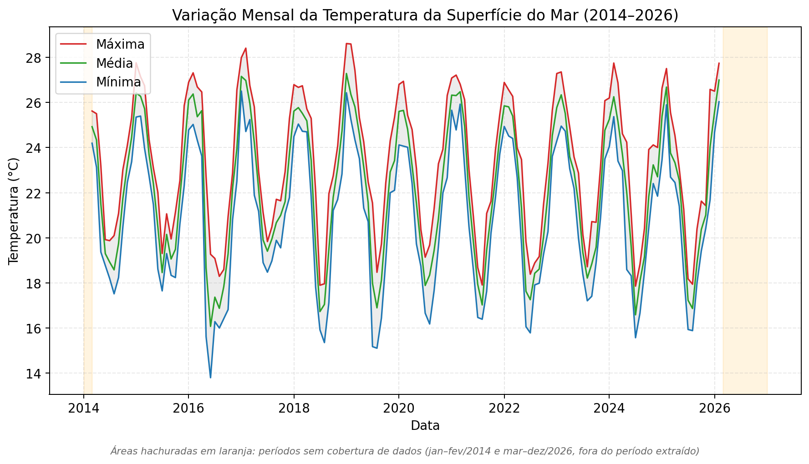
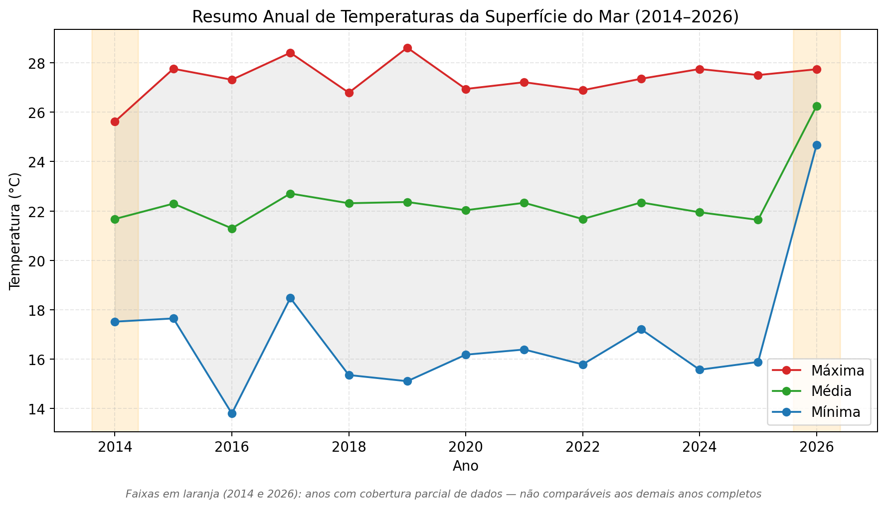
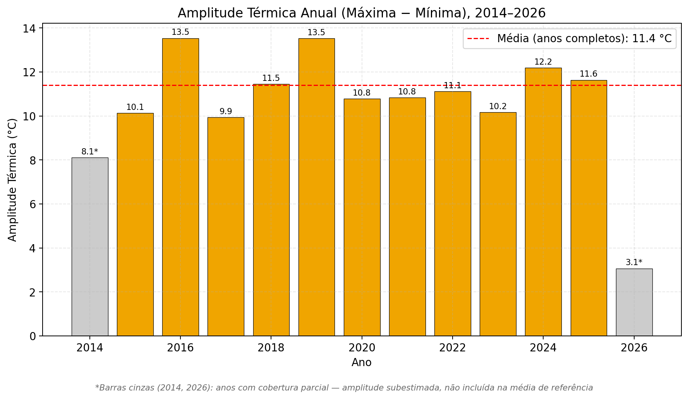
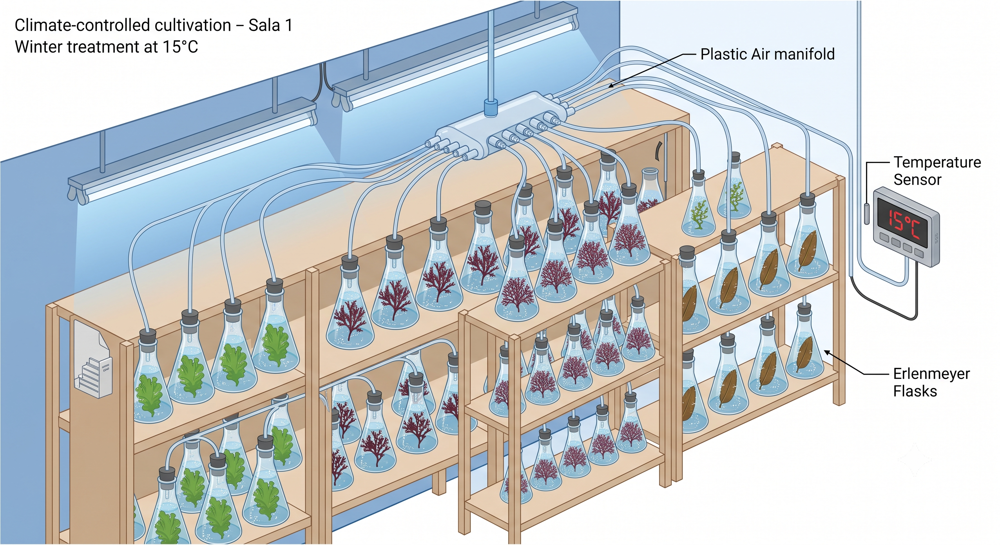
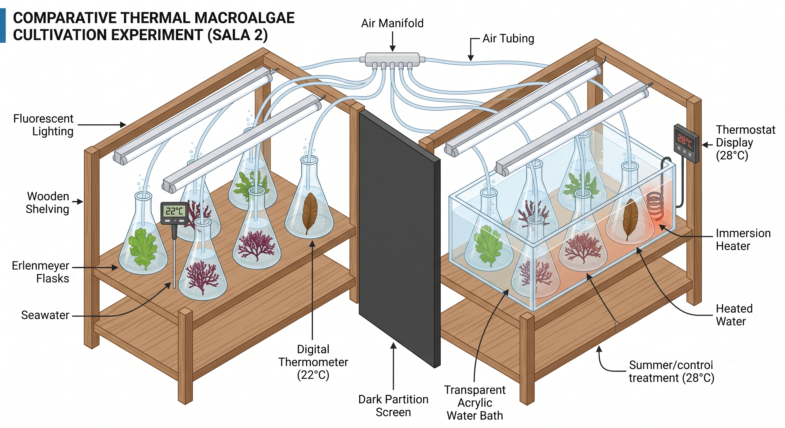
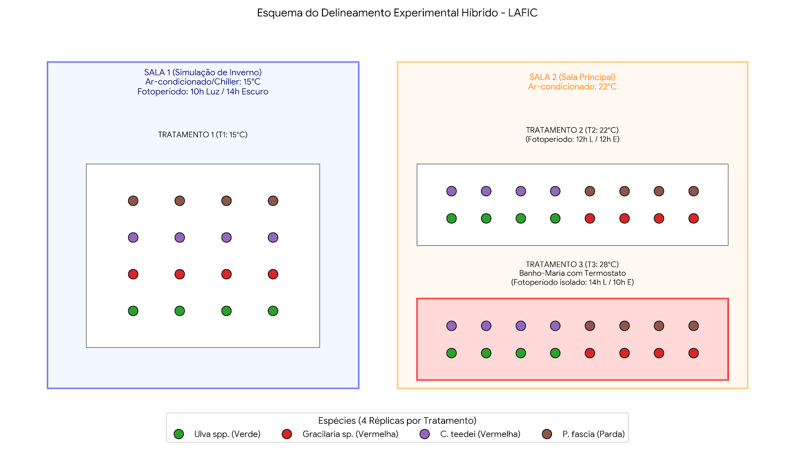
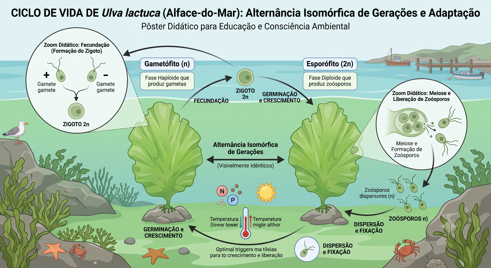
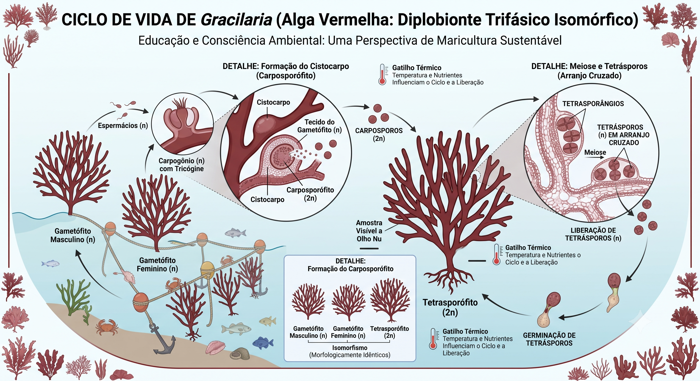
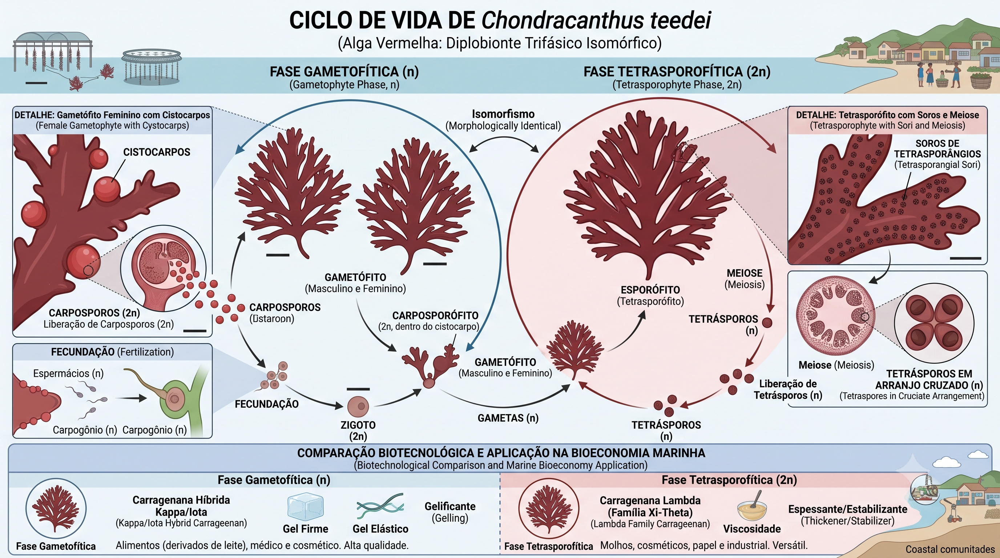
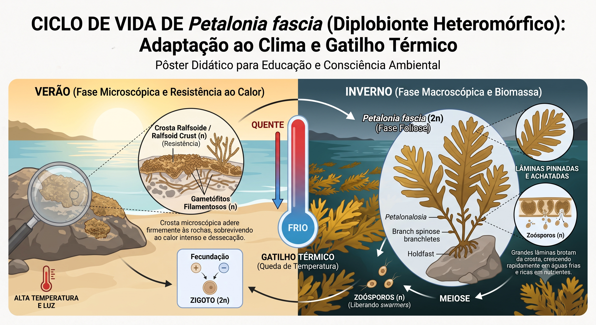

Plano Operacional e Delineamento Experimental
Laboratório de Ficologia - LAFIC/UFSC
A entressafra do cultivo de Kappaphycus alvarezii — atualmente restrito à estação quente devido à sua baixa tolerância térmica — pode ser preenchida pelo cultivo de espécies nativas com maior tolerância ao frio, permitindo aos maricultores da região manter produção e renda ao longo de todo o ano[cite: 3].
O cultivo comercial de K. alvarezii (autorizado pela IN IBAMA nº 1/2020) sofre com a sazonalidade na Baía Sul de Florianópolis[cite: 3]. Estudos locais mostram taxas de crescimento de 4,29% a 5,12% ao dia no verão, contra apenas 0,32% a 0,54% ao dia no inverno (resultando em perda de biomassa)[cite: 3].
Produtora de carragenana (kappa/iota na fase gametofítica), candidata direta à diversificação da cadeia dominada pelo Kappaphycus[cite: 3].
Uso consolidado como biofiltro em sistemas multitróficos (IMTA), robusta e com rápido ganho de biomassa oportunista[cite: 3].
Uma das principais fontes comerciais de ágar mundialmente, com aplicações na indústria alimentícia e microbiológica[cite: 3].
Candidata exploratória de inverno; fase foliosa macroscópica se desenvolve no frio, com potencial para compostos como fucoxantina[cite: 3].
Para contextualizar os parâmetros dos ensaios laboratoriais, foi processada uma série temporal da Temperatura da Superfície do Mar (SST) entre 2014 e 2026 via Google Earth Engine, para o grid da Baía Sul de Florianópolis[cite: 3].
| Parâmetro Oceanográfico | Valor Identificado | Observação |
|---|---|---|
| Temperatura Máxima Absoluta | 28,62 °C | Registrada em 15/01/2019[cite: 3]. |
| Temperatura Média Histórica | 22,11 °C | Média de toda a série (2014–2026)[cite: 3]. |
| Temperatura Mínima Absoluta | 13,78 °C | Registrada em 23/06/2016[cite: 3]. |
| Amplitude Térmica Anual | 11,4 °C (Média) | Variação de ~9,9 °C a 13,5 °C nos anos completos[cite: 3]. |

GRÁFICO 1: As temperaturas mais altas concentram-se em jan-fev (~26,3 °C) e as mais baixas em jul-ago (~17,9 °C)[cite: 3]. Áreas hachuradas indicam anos parciais (2014 e 2026)[cite: 3].

GRÁFICO 2: Resumo anual evidenciando a consistência do padrão térmico ao longo da década[cite: 3].

GRÁFICO 3: A amplitude calculada em cada ano civil reforça a drástica variação sazonal à qual o cultivo in vivo estará exposto[cite: 3].
Com base na série oceanográfica, a matriz reproduzirá a faixa térmica da Baía Sul em três níveis controlados distribuídos em duas salas (48 unidades experimentais)[cite: 3].
Temperatura: 15 °C. Fotoperíodo curto (10h luz / 14h escuro) e baixa irradiância. Sala fisicamente isolada[cite: 3].
Temperatura: 22 °C (ambiente). Fotoperíodo intermediário (12h luz / 12h escuro)[cite: 3].
Temperatura: 28 °C (banho-maria termostatizado). Fotoperíodo longo isolado por partição física (14h luz / 10h escuro)[cite: 3].

Sala 1: Tratamento de Inverno (15 °C), com frascos Erlenmeyer aerados por manifold central[cite: 3].

Sala 2: T2 (Transição a 22 °C à esquerda) e T3 (Verão a 28 °C em banho-maria à direita), isolados pela partição de fotoperíodo[cite: 3].

Esquema geral de distribuição das 4 espécies × 4 réplicas em cada um dos 3 tratamentos térmicos[cite: 3].
O entendimento minucioso dos ciclos biológicos é fundamental para a seleção e padronização das fases biológicas que atuarão como inóculos no experimento laboratorial e no espinhel (longline)[cite: 3].
Ciclo diplobionte isomórfico. Rápida resposta a gatilhos de temperatura e capacidade oportunista para os meses de temperatura mínima absoluta (~13 °C a 15 °C)[cite: 3].

Alternância isomórfica de gerações (gametófito e esporófito) de Ulva[cite: 3].
Ciclo diplobionte trifásico isomórfico. A fase tetrasporofítica possui grande robustez ambiental (Abreu et al., 2011), acompanhada pelo monitoramento de PAM e pigmentos para aferir aclimatação[cite: 3].

Destaque para a formação do cistocarpo e liberação de tetrásporos em Gracilaria[cite: 3].
Ciclo trifásico isomórfico vital para o experimento: gametófitos sintetizam carragenana kappa/iota (gel duro) enquanto tetrasporófitos produzem lambda (espessante sem gel)[cite: 3].

Diferenciação biotecnológica das carragenanas nas diferentes fases do ciclo[cite: 3].
Ciclo heteromórfico estratégico: uma crosta ralfsoide microscópica no verão e uma fase foliosa macroscópica impulsionada pela queda de temperatura no inverno (biomassa e fucoxantina)[cite: 3].

Adaptação climática e gatilho térmico para o desenvolvimento das lâminas achatadas na Petalonia[cite: 3].
Os espécimes serão coletados na Baía Sul, mantendo a representatividade genética e reduzindo estresse de transporte. Coleta em maré baixa, priorizando talos saudáveis sem necrose ou epifitismo[cite: 4].
| Etapa | Itens / Materiais | Finalidade |
|---|---|---|
| Campo | Caixa térmica, potes, água do local, espátulas, termômetro e GPS. | Transporte estabilizado, retirada sem danos e registro do ponto exato[cite: 4]. |
| Cultivo | 48 Erlenmeyers, provetas, pipetas volumétricas, sistema de aeração (manifold). | Unidades experimentais e distribuição equilibrada de ar[cite: 4]. |
| Dados | Balança de precisão (0,01 g), Fluorômetro PAM, Espectrofotômetro e Dataloggers. | Monitoramento biológico, fisiológico (TCE, Fv/Fm, pigmentos) e ambiental[cite: 4]. |
O fluxo a seguir é estabelecido pelas normas de gerenciamento de resíduos (PGRS preliminar) do LAFIC[cite: 4]. Não é permitido o descarte cruzado entre as classes.
O LAFIC não dispõe de autoclave. A esterilização de preparo e o descarte de volumes líquidos exigem procedimentos químicos (Hipoclorito ou filtração), impossibilitando fervura contínua[cite: 4].
| Resíduo Gerado no Experimento | Fluxo de Classificação | Procedimento de Descarte Obrigatório |
|---|---|---|
| Meio de cultura líquido usado | Infectante (Biológico) | Inativar com Hipoclorito 1% (mín. 30 min) antes de descartar na pia com água abundante[cite: 4]. |
| Biomassa de alga descartada | Infectante Sólido | Acondicionar em Saco Vermelho etiquetado e solicitar Coleta Especial UFSC[cite: 4]. |
| Vidrarias, lâminas e pipetas quebradas | Perfurocortante | Recolher com pinça/pá e depositar na Caixa Rígida Amarela (Descarpack)[cite: 4]. |
| Solventes do espectrofotômetro | Químico | Bombona PEAD por compatibilidade (rótulo azul ou vermelho); solicitar coleta UFSC[cite: 4]. |
| Luvas, papel toalha (sem risco químico) | Comum / Reciclável | Saco branco (comum) ou verde/azul (reciclável)[cite: 4]. |